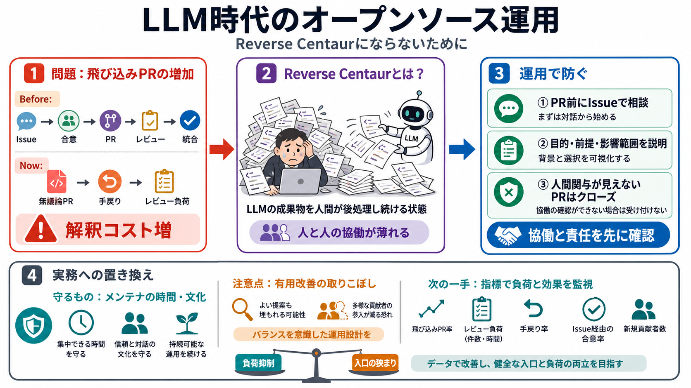

Before（通常）
Issue→合意→PR→レビュー→統合
Now（懸念）
事前議論なしPRが増え、審査の手戻りが起きやすい

『I Am Not a Reverse Centaur（私はリバース・センタウルにはならない）』が問題にするのは、LLM生成コードそのものより「飛び込みPR」増加によるメンテナ負荷です。
従来はIssueで意図を共有し、必要なら議論してからPRで提案し、メンテナがレビューして統合します。
リバース・センタウルとは、機械（LLM）が吐き出した成果物を人間（メンテナ）が“後処理”し続ける状態の比喩です（人と人の協働が薄れる）。
著者は「PR提出を減らし、Issueで事前相談を必須」にする運用を徹底します（協働と意図確認を先に行う）。
短時間で“人間の関与（human involvement）”の証拠が確認できないPRは即クローズするとしています。
著者の焦点は「PR数の増加」よりも、内容の質が事前検討不足になり、レビュー時間が長くなる点です。
論点は「LLMのコードが悪い」ではなく、「事前議論なしに投げる」「理解が伴わない」プロセスにあります。
LLMでしかコードを書けない人は、PRでトークン（時間・注意）を浪費するより、Issueで問題を記述してほしいと提案します。
ただし記事には、レビュー工数やPR内訳（LLM由来比率など）のような定量データが提示されていないと解釈されています。
人間関与が確認できないPRを即クローズすると、見落とし（有用な改善の排除）リスクが増えます。
貢献がコード投下中心になると、コミュニティの“人と人の協働”が薄れ、文化が変わる懸念が示されています。
オープンソースへの関心が薄れ、コードを“作る”より“金を払ってAIに作らせる”が選ばれやすいのでは、という問いが投げられています。
最終的に、（人がコードを書かなくなり）機械とその保有者が主導権を持つ未来に反対したい、という結論につながります。
この文章はLLM論争より、メンテナ負荷と協働の条件を守る“運用設計”として読むと実用的です。
以下はユーザー提供の文章（要約・ポイント・FAQ・意見）に基づく再構成であり、原文への直接リンク情報は含まれていません。
No references found